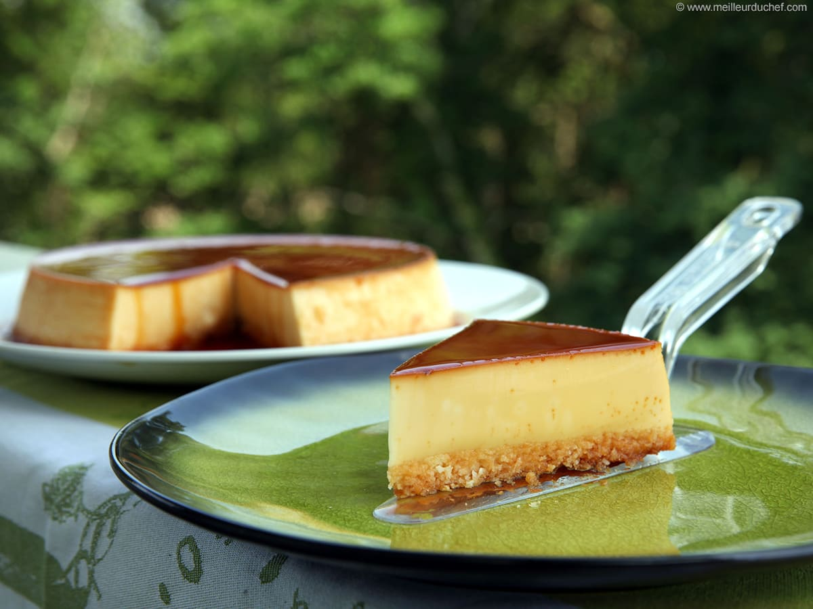

Coconut flan

The flan coco or flan antillais is a gourmet dessert that will delight your taste buds.
A soft coconut cookie, a creamy vanilla flan and a caramel topping.
Ingredients
- 125g Coconut
- 3 eggs
- 400g sweetened condensed milk
- 400ml skimmed milk
- Caramel
Steps
- Separate the yolks from the egg whites. Pour the sweetened condensed milk with the same dose of skimmed milk.
- Add the coconut and mix everything together.
- Beating egg whites. Mix them delicately with the dough.
- Caramelize the bottom of the mold.
- Bake in the oven in a bain-marie at thermostat 7-8 for 45 minutes.